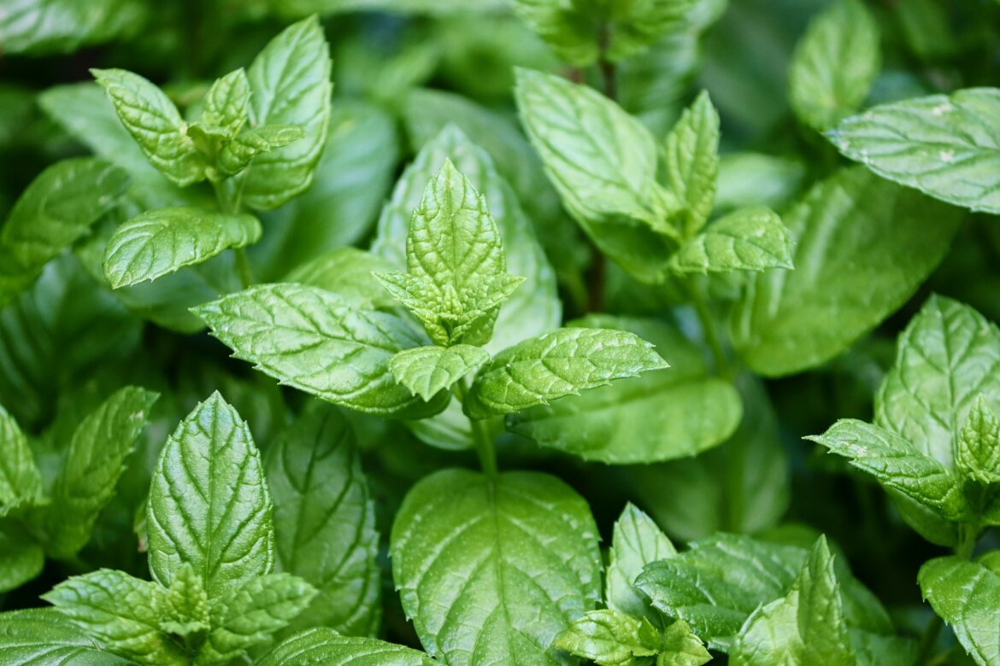

A borsmenta (Mentha × piperita) az Árvacsalánfélék (Lamiaceae) családjába tartozó növényfaj. A faj neve is utal arra, hogy hibrid eredetű: a vízi menta és a zöld menta keresztezéséből származik. Ez a fajta menta világszerte elterjedt, különösen Észak-Amerikában és Európában. A borsmenta körülbelül 30-90 cm magasra nő. Sötétzöld levelei oválisak, és érdes, fogazott szélekkel rendelkeznek. A növény nyáron virágzik, apró, lila virágokkal, amelyek vonzzák a rovarokat. A borsmenta illóolaja hűsítő, erőteljes mentol illattal rendelkezik, amelyet széles körben használnak az élelmiszeriparban, a kozmetikumokban és a gyógyászatban. Az illóolajat a levelekben található mirigyek termelik, és a levelek szárításával és lepárlásával nyerik ki.